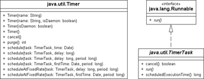

12.3 Thread-Eigenschaften und -Zustände
Ein Thread hat eine ganze Reihe von Zuständen, wie einen Namen und eine Priorität, die sich erfragen und setzen lassen. Nicht jede Eigenschaft ist nach dem Start änderbar, doch welche das sind, zeigen die folgenden Abschnitte.
12.3.1 Der Name eines Threads
Ein Thread hat eine ganze Menge Eigenschaften – wie einen Zustand, eine Priorität und auch einen Namen. Dieser kann mit setName() gesetzt und mit getName() erfragt werden.
class java.lang.Thread |
- Thread(String name)
Erzeugt ein neues Thread-Objekt und setzt den Namen. Sinnvoll bei Unterklassen, die den Konstruktor über super(name) aufrufen. - Thread(Runnable target, String name)
Erzeugt ein neues Thread-Objekt mit einem Runnable und setzt den Namen. - final String getName()
Liefert den Namen des Threads. Der Name wird im Konstruktor angegeben oder mit setName() zugewiesen. Standardmäßig ist der Name »Thread-x«, wobei x eine eindeutige Nummer ist. - final void setName(String name)
Ändert den Namen des Threads.
12.3.2 Wer bin ich?
Eine Erweiterung der Klasse Thread hat den Vorteil, dass geerbte Methoden wie getName() sofort genutzt werden können. Wenn wir Runnable implementieren, genießen wir diesen Vorteil nicht.
Die Klasse Thread liefert mit der statischen Methode currentThread() die Objektreferenz für das Thread-Exemplar, das diese Anweisung gerade ausführt. Auf diese Weise lassen sich nicht-statische Thread-Methoden wie getName() verwenden.
| Beispiel |
|
Gib die aktuelle Priorität des laufenden Threads und den Namen aus: System.out.println( Thread.currentThread().getPriority() ); // z. B. 5 |
Falls es in einer Schleife wiederholten Zugriff auf Thread.currentThread() gibt, sollte das Ergebnis zwischengespeichert werden, denn der Aufruf ist nicht ganz billig.
class java.lang.Thread |
- static Thread currentThread()
Liefert den Thread, der das laufende Programmstück ausführt.
12.3.3 Schläfer gesucht
Manchmal ist es notwendig, einen Thread eine bestimmte Zeit lang anzuhalten. Dazu lassen sich Methoden zweier Klassen nutzen:
- die überladene statische Methode Thread.sleep(): Etwas erstaunlich ist sicherlich, dass sie keine Objektmethode von einem Thread-Objekt ist, sondern eine statische Methode. Ein Grund wäre, dass dadurch verhindert wird, externe Threads zu beeinflussen. Es ist nicht möglich, einen fremden Thread, über dessen Referenz wir verfügen, einfach einige Sekunden lang schlafen zu legen und ihn so von der Ausführung abzuhalten.
- die Objektmethode sleep() auf einem TimeUnit-Objekt: Auch sie bezieht sich immer auf den ausführenden Thread. Der Vorteil gegenüber sleep() ist, dass hier die Zeiteinheiten besser sichtbar sind.
| Beispiel |
|
Der ausführende Thread soll zwei Sekunden lang schlafen. Einmal mit Thread.sleep(): try { |
|
Dann mit TimeUnit: try { |
Der Schlaf kann durch eine InterruptedException unterbrochen werden, etwa durch interrupt(). Die Ausnahme muss behandelt werden, da sie keine RuntimeException ist.
Praktisch wird das Erweitern der Klasse Thread bei inneren anonymen Klassen. Die folgende Anweisung gibt nach zwei Sekunden Schlafzeit eine Meldung auf dem Bildschirm aus:
Listing 12.6: com/tutego/insel/thread/SleepInInnerClass.java, main()
new Thread() {
@Override public void run() {
try {
Thread.sleep( 2000 );
System.out.println( "Zeit ist um." );
} catch ( InterruptedException e ) { e.printStackTrace(); }
}
}.start();
Da new Thread(){...} ein Exemplar der anonymen Unterklasse ergibt, lässt die auf dem Ausdruck aufgerufene Objektmethode start() den Thread gleich loslaufen. Aufgaben dieser Art lösen auch die Timer gut.
class java.lang.Thread |
- static void sleep(long millis) throws InterruptedException
Der aktuell ausgeführte Thread wird mindestens millis Millisekunden schlafen gelegt. Unterbricht ein anderer Thread den schlafenden, wird vorzeitig eine InterruptedException ausgelöst. - static void sleep(long millis, int nanos) throws InterruptedException
Der aktuell ausgeführte Thread wird mindestens millis Millisekunden und zusätzlich nanos Nanosekunden schlafen gelegt. Im Gegensatz zu sleep(long) wird bei einer negativen Millisekundenanzahl eine IllegalArgumentException ausgelöst; auch wird diese Exception ausgelöst, wenn die Nanosekundenanzahl nicht zwischen 0 und 999.999 liegt.
enum java.util.concurrent.TimeUnit |
- NANOSECONDS, MICROSECONDS, MILLISECONDS, SECONDS, MINUTES, HOURS, DAYS
Aufzählungselemente von TimeUnit. - void sleep(long timeout) throws InterruptedException
Führt ein Thread.sleep() für die Zeiteinheit aus.
Eine überladene Methode Thread.sleep(long, TimeUnit) wäre nett, gibt es aber nicht.
Abbildung 12.4: UML-Diagramme für Timer und TimerTask
12.3.4 Mit yield() auf Rechenzeit verzichten
Neben sleep() gibt es eine weitere Methode, um kooperative Threads zu programmieren: die Methode yield(). Sie funktioniert etwas anders als sleep(), da hier nicht nach Ablauf der genannten Millisekunden zum Thread zurückgekehrt wird, sondern yield() den Thread bezüglich seiner Priorität wieder in die Thread-Warteschlange des Systems einordnet. Einfach ausgedrückt, sagt yield() der Thread-Verwaltung: »Ich setze diese Runde aus und mache weiter, wenn ich das nächste Mal dran bin.«
class java.lang.Thread |
- static void yield()
Der laufende Thread gibt freiwillig seine Rechenzeit ab. Die Methode ist für Implementierungen der JVM nicht verbindlich.
12.3.5 Der Thread als Dämon
Ein Server reagiert oft in einer Endlosschleife auf eingehende Aufträge vom Netzwerk und führt die gewünschte Aufgabe aus. In unseren bisherigen Programmen haben wir oft Endlosschleifen eingesetzt, sodass ein gestarteter Thread nie beendet wird. Wenn also run() wie in den vorangehenden Beispielen nie abbricht (Informatiker sprechen hier von terminiert), läuft der Thread immer weiter, auch wenn die Hauptapplikation beendet ist. Dies ist nicht immer beabsichtigt, da vielleicht Server-Funktionalität nach dem Beenden der Applikation nicht mehr gefragt ist. Dann sollte auch der endlos laufende Thread beendet werden. Um dies auszudrücken, erhält ein im Hintergrund arbeitender Thread eine spezielle Kennung: Der Thread wird als Dämon[185](Das griechische δαίμων (engl. daemon) bezeichnet allerlei Wesen zwischen Gott und Teufel. Eine gute Einleitung gibt http://de.wikipedia.org/wiki/D%C3%A4mon.) gekennzeichnet. Standardmäßig ist ein aufgebauter Thread kein Dämon.
Ein Dämon ist wie ein Heinzelmännchen im Hintergrund mit einer Aufgabe beschäftigt. Wenn das Hauptprogramm beendet ist und die Laufzeitumgebung erkennt, dass kein normaler Thread mehr läuft, sondern nur Dämonen, dann ist das Ende der Dämonen eingeläutet, und die JVM kommt zum Ende. Denn Dämonen-Threads sind Zulieferer: Gibt es keine Klienten mehr, werden auch sie nicht mehr gebraucht. Das ist wie bei den Göttern der Scheibenwelt: Glaubt keiner an sie, hören sie auf zu existieren. Wir müssen uns also um das Ende des Dämons nicht kümmern. Gleichzeitig heißt das aber auch, dass ein Dämonen-Thread vorsichtig mit Ein-/Ausgabeoperationen sein muss, denn er kann jederzeit – auch etwa während einer Schreiboperation auf die Festplatte – abgebrochen werden, was zu beschädigten Daten führen kann.
| Hinweis |
|
Der Garbage-Collector (GC) ist ein gutes Beispiel für einen Dämon. Nur, wenn es andere Threads gibt, muss der Speicher aufgeräumt werden. Gibt es keine anderen Threads mehr, kann auch die JVM mit beendet werden, was auch die Dämonen-Threads beendet. |
Wie ein Thread in Java zum Dämon wird
Einen Thread in Java als Dämon zu kennzeichnen, heißt, die Methode setDaemon() mit dem Argument true aufzurufen. Die Methode ist nur vor dem Starten des Threads erlaubt. Danach kann der Status nicht wieder vom Dämon in den normalen Benutzer-Thread umgesetzt werden. Die Auswirkungen von setDaemon(true) können wir am folgenden Programm ablesen:
Listing 12.7: com/tutego/insel/thread/DaemonThread.java
package com.tutego.insel.thread;
class DaemonThread extends Thread
{
DaemonThread()
{
setDaemon( true );
}
@Override
public void run()
{
while ( true )
System.out.println( "Lauf, Thread, lauf" );
}
public static void main( String[] args )
{
new DaemonThread().start();
}
}
In diesem Programm wird der Thread gestartet, und danach ist die Anwendung sofort beendet. Vor dem Ende kann der neue Thread aber schon einige Zeilen auf der Konsole ausgeben. Klammern wir die Anweisung mit setDaemon(true) aus, läuft das Programm ewig, da die Laufzeitumgebung auf das natürliche Ende der Thread-Aktivität wartet.
class java.lang.Thread |
- final void setDaemon(boolean on)
Markiert den Thread als Dämon oder normalen Thread. Die Methode muss aufgerufen werden, bevor der Thread gestartet wurde, andernfalls folgt eine IllegalThreadStateException. Mit anderen Worten: Nachträglich kann ein existierender Thread nicht mehr zu einem Dämon gemacht werden, und ihm kann auch nicht die Dämonenhaftigkeit genommen werden, so er sie hat. - final boolean isDaemon()
Testet, ob der Thread ein Dämon-Thread ist.
12.3.6 Das Ende eines Threads
Es gibt Threads, die dauernd laufen, weil sie zum Beispiel Serverfunktionen implementieren. Andere Threads führen einmalig eine Operation aus und sind danach beendet. Allgemein ist ein Thread beendet, wenn eine der folgenden Bedingungen zutrifft:
- Die run()-Methode wurde ohne Fehler beendet. Wenn wir eine Endlosschleife programmieren, würde diese potenziell einen nie endenden Thread bilden.
- In der run()-Methode tritt eine RuntimeException auf, die die Methode beendet. Das beendet weder die anderen Threads noch die JVM als Ganzes.
- Der Thread wurde von außen abgebrochen. Dazu dient die prinzipbedingt problematische Methode stop(), von deren Verwendung abgeraten wird und die auch veraltet ist.
- Die virtuelle Maschine wird beendet und nimmt alle Threads mit ins Grab.
Wenn der Thread einen Fehler melden soll
Da ein Thread nebenläufig arbeitet, kann die run()-Methode synchron schlecht Exceptions melden oder einen Rückgabewert liefern. Wer sollte auch an welcher Stelle darauf hören? Eine Lösung für das Problem ist ein Listener, der sich beim Thread anmeldet und darüber informiert wird, ob der Thread seine Arbeit machen konnte oder nicht. Eine andere Lösung gibt Callable, mit dem ein spezieller Fehlercode zurückgegeben oder eine Exception angezeigt werden kann. Speziell für ungeprüfte Ausnahmen kann ein UncaughtExceptionHandler weiterhelfen.
12.3.7 Einen Thread höflich mit Interrupt beenden
Der Thread ist in der Regel zu Ende, wenn die run()-Methode ordentlich bis zum Ende ausgeführt wurde. Enthält eine run()-Methode jedoch eine Endlosschleife – wie etwa bei einem Server, der auf eingehende Anfragen wartet –, so muss der Thread von außen zur Kapitulation gezwungen werden.
Wenn wir den Thread schon nicht von außen beenden wollen, können wir ihn immerhin bitten, seine Arbeit aufzugeben. Periodisch müsste er dann nur überprüfen, ob jemand von außen den Abbruchswunsch geäußert hat.
Die Methoden interrupt() und isInterrupted()
Die Methode interrupt() setzt von außen in einem Thread-Objekt ein internes Flag, das dann in der run()-Methode durch isInterrupted() periodisch abgefragt werden kann.
Das folgende Programm soll jede halbe Sekunde eine Meldung auf dem Bildschirm ausgeben. Nach zwei Sekunden wird der Unterbrechungswunsch mit interrupt() gemeldet. Auf dieses Signal achtet die sonst unendlich laufende Schleife und bricht ab:
Listing 12.8: com/tutego/insel/thread/ThreadusInterruptus.java, main()
Thread t = new Thread()
{
@Override
public void run()
{
System.out.println( "Es gibt ein Leben vor dem Tod. " );
while ( ! isInterrupted() )
{
System.out.println( "Und er läuft und er läuft und er läuft" );
try
{
Thread.sleep( 500 );
}
catch ( InterruptedException e )
{
interrupt();
System.out.println( "Unterbrechung in sleep()" );
}
}
System.out.println( "Das Ende" );
}
};
t.start();
Thread.sleep( 2000 );
t.interrupt();
Die Ausgabe zeigt hübsch die Ablaufsequenz:
Es gibt ein Leben vor dem Tod.
Und er läuft und er läuft und er läuft
Und er läuft und er läuft und er läuft
Und er läuft und er läuft und er läuft
Und er läuft und er läuft und er läuft
Unterbrechung in sleep()
Das Ende
Die run()-Methode im Thread ist so implementiert, dass die Schleife genau dann verlassen wird, wenn isInterrupted() den Wert true ergibt, also von außen die interrupt()-Methode für dieses Thread-Exemplar aufgerufen wurde. Genau dies geschieht in der main()-Methode. Auf den ersten Blick ist das Programm leicht verständlich, doch vermutlich erzeugt das interrupt() im catch-Block die Aufmerksamkeit. Stünde diese Zeile dort nicht, würde das Programm aller Wahrscheinlichkeit nach nicht funktionieren. Das Geheimnis ist folgendes: Wenn die Ausgabe nur jede halbe Sekunde stattfindet, befindet sich der Thread fast die gesamte Zeit über in der Schlafmethode sleep(). Also wird vermutlich der interrupt() den Thread gerade beim Schlafen stören. Genau dann wird sleep() durch InterruptedException unterbrochen, und der catch-Behandler fängt die Ausnahme ein. Jetzt passiert aber etwas Unerwartetes: Durch die Unterbrechung wird das interne Flag zurückgesetzt, sodass isInterrupted() meint, die Unterbrechung habe gar nicht stattgefunden. Daher muss interrupt() erneut aufgerufen werden, da das Abbruch-Flag neu gesetzt werden muss und isInterrupted() das Ende bestimmen kann.
Wenn wir mit der Objektmethode isInterrupted() arbeiten, müssen wir beachten, dass neben sleep() auch die Methoden join() und wait() durch die InterruptedException das Flag löschen.
| Hinweis |
|
Die Methoden sleep(), wait() und join() lösen alle eine InterruptedException aus, wenn sie durch die Methode interrupt() unterbrochen werden. Das heißt, interrupt() beendet diese Methoden mit der Ausnahme. |
Zusammenfassung: interrupted( ), isInterrupted( ) und interrupt( )
Die Methodennamen sind verwirrend gewählt, sodass wir die Aufgaben noch einmal zusammenfassen wollen: Die Objektmethode interrupt() setzt in einem (anderen) Thread-Objekt ein Flag, dass es einen Antrag gab, den Thread zu beenden. Sie beendet aber den Thread nicht, obwohl es der Methodenname nahelegt. Dieses Flag lässt sich mit der Objektmethode isInterrupted() abfragen. In der Regel wird dies innerhalb einer Schleife geschehen, die darüber bestimmt, ob die Aktivität des Threads fortgesetzt werden soll. Die statische Methode interrupted() ist zwar auch eine Anfragemethode und testet das entsprechende Flag des aktuell laufenden Threads, wie Thread.currentThread().isInterrupted(), aber zusätzlich löscht es den Interrupt-Status auch, was isInterrupted() nicht tut. Zwei aufeinanderfolgende Aufrufe von interrupted() führen daher zu einem false, es sei denn, in der Zwischenzeit erfolgt eine weitere Unterbrechung.
12.3.8 UncaughtExceptionHandler für unbehandelte Ausnahmen
Einer der Gründe für das Ende eines Threads ist eine unbehandelte Ausnahme, etwa von einer nicht aufgefangenen RuntimeException. Um in diesem Fall einen kontrollierten Abgang zu ermöglichen, lässt sich an den Thread ein UncaughtExceptionHandler hängen, der immer dann benachrichtigt wird, wenn der Thread wegen einer nicht behandelten Ausnahme endet.
UncaughtExceptionHandler ist eine in Thread deklarierte innere Schnittstelle, die eine Operation void uncaughtException(Thread t, Throwable e) vorschreibt. Eine Implementierung der Schnittstelle lässt sich entweder einem individuellen Thread oder allen Threads anhängen, sodass im Fall des Abbruchs durch unbehandelte Ausnahmen die JVM die Methode uncaughtException() aufruft. Auf diese Weise kann die Applikation im letzten Atemzug noch den Fehler loggen, den die JVM über das Throwable e übergibt.
class java.lang.Thread |
- void setUncaughtExceptionHandler(Thread.UncaughtExceptionHandler eh)
Setzt den UncaughtExceptionHandler für den Thread. - Thread.UncaughtExceptionHandler getUncaughtExceptionHandler()
Liefert den aktuellen UncaughtExceptionHandler. - Static void setDefaultUncaughtExceptionHandler(Thread.UncaughtExceptionHandler eh)
Setzt den UncaughtExceptionHandler für alle Threads. - static Thread.UncaughtExceptionHandler getDefaultUncaughtExceptionHandler()
Liefert den zugewiesenen UncaughtExceptionHandler aller Threads.
Ein mit setUncaughtExceptionHandler() lokal gesetzter UncaughtExceptionHandler überschreibt den Eintrag für den setDefaultUncaughtExceptionHandler(). Zwischen dem mit dem Thread assoziierten Handler und dem globalen gibt es noch einen Handler-Typ für Thread-Gruppen, der jedoch seltener verwendet wird.
Ihr Kommentar
Wie hat Ihnen das <openbook> gefallen? Wir freuen uns immer über Ihre freundlichen und kritischen Rückmeldungen.
 Jetzt bestellen
Jetzt bestellen


{kind=link}
{kind=link}